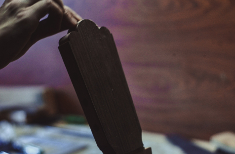
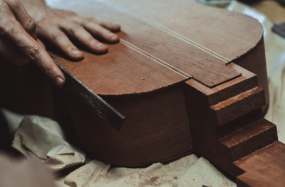
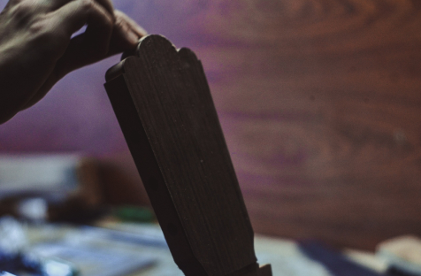
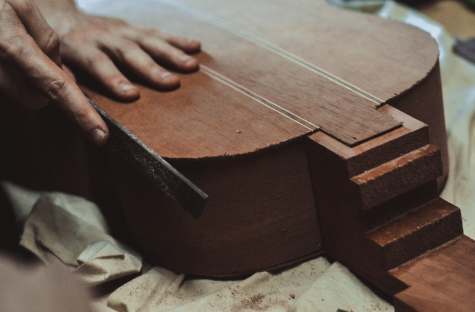

About Tomás Sorgetti
Born in Argentina of Italian descent, Tomás is the head luthier in the South American shop and owner and creator of Sorgetti Luthier instruments. His attention to detail is awesome and is a crucial part of what makes his instruments so polished and unique

One of a kind
The attention to each detail, and of course, the final success with the instruments are the keys to make the musicial feel comfortable and cared within all the process. From this fundament borns this brand in the custom built guitars & basses world: All about consumer tastes.
.svg)
Our History
The philosophy of Sorgetti Luthier is to build exceptional musical instruments, taking in account the expectations and desires of our customers; being faithful to the ideals of a 100% handmade production that reflects the enthusiasm and dedication that they put into each work. The most high quality wood selection and hardware, in addition to an exclusive dedication to the customer, make the base for this growing brand.
2014
After years of practice, Tomás started repairing guitars and designing and building his own.
2016
He opens a new Workshop in Pacheco (Buenos Aires, Argentina) where he expands to building other string instruments, such as ukuleles, basses and banjoes.
2019
We are deeply involved in the Very First Luthier Guitar Show Organization (LuCE Association), in Argentina.
2021
Tomás and his team start their online custom instrument services. Sorgetti Luthier grows and improves: Our approach to the guitar and what we do is simple – we love traditional designs, but feel that there is always room for improvement and interpretation. Versatility, comfort, and consistency are only the beginnings of where we work to improve connection and playability
 
